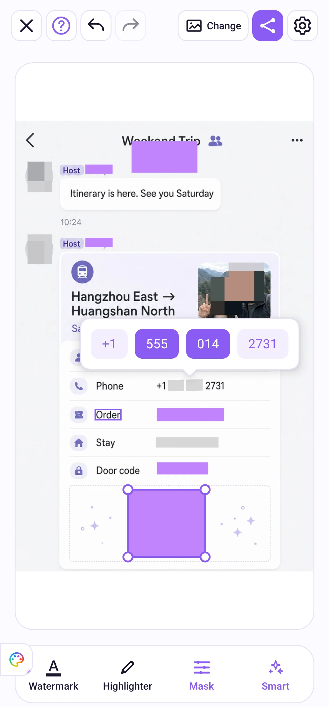

写真の編集
手動マスクと単語の選択
操作の流れを見る
時刻を選ぶと、その操作に移動できます。細部は全画面でご覧ください。
単語選択の操作例
隠す部分だけを選ぶ
数字の区切りをタップして、表示とマスクを切り替えます。最初と最後の数字を残してみましょう。
マスクした部分
操作手順
検出されたテキスト行を長押しし、隠したい単語や部分を選びます。見落とされた箇所はマスクツールで効果を選び、「調整」で矩形またはブラシを選んで手動で覆います。間違えたら元に戻せます。


長方形の範囲を調整
長方形を描いたら、四隅のハンドルをドラッグして大きさを変えます。長方形をタップすると調整が終了し、マスクは残ります。もう一度タップすると削除されます。新しい長方形を描くと、前のハンドルは非表示になります。
間違えたときは元に戻す・やり直しを使います。画像を拡大して端を確認し、隠したい内容全体が覆われているか確かめてください。
効果と色
「マスク」または「マーカー」をタップして選択し、選択中のツールをもう一度タップして設定を開きます。マスクではモザイク、ぼかし、塗りつぶしを選択できます。「調整」では長方形・ブラシ、サイズ、モザイクやぼかしの強さを設定できます。
塗りつぶしやマーカーの色と不透明度は虹色のパレットで調整します。グリッド、スペクトル、RGB、Hex 入力に対応しています。パレットボタンはキャンバスの別の端にドラッグできます。マスクとマーカーの設定は別々に保存されます。